Neste artigo, vamos explorar como a inteligência artificial está transformando o desenvolvimento frontend e o design AI, com foco na ferramenta Bolt.new. Aprenda a utilizar essa poderosa ferramenta de forma gratuita e simplificada para potencializar seus projetos.
Table of Contents
- 🌟 Introdução ao Bolt.new
- 🎥 Demonstração do Google AI Studio
- 🔑 Como gerar chave de API
- 🛠️ Teste prático da ferramenta
- 📚 Explicação sobre LM Studio
- ⚙️ Configurações finais
- 📌 A importância da inteligência artificial no desenvolvimento frontend
- 🛠️ Como o Bolt.new simplifica o processo de desenvolvimento
- 🌐 Vantagens de usar a versão online do Bolt.new
- ⚙️ Configurando o ambiente para uso do Bolt.new
- 🔍 Comparação entre LLMs disponíveis
- 🔧 Alternativas ao Bolt.new e suas funcionalidades
- 🧠 Dicas avançadas para uso do Bolt.new
- ⚠️ Como resolver problemas comuns ao usar o Bolt.new
- ❓ FAQs sobre inteligência artificial no desenvolvimento frontend
🌟 Introdução ao Bolt.new
O Bolt.new é uma ferramenta inovadora que facilita o uso da inteligência artificial no desenvolvimento frontend. Com sua interface amigável e funcionalidades robustas, ele permite que desenvolvedores integrem modelos de linguagem em seus projetos sem complicações. A proposta é simples: democratizar o acesso à inteligência artificial, tornando-a acessível a todos, independentemente do nível de experiência.
Uma das grandes vantagens do Bolt.new é a sua capacidade de operar diretamente do navegador, eliminando a necessidade de instalações complexas. Isso significa que você pode começar a usar a ferramenta rapidamente, economizando tempo e esforço. A integração com diversas APIs e modelos de inteligência artificial permite que você explore as possibilidades de design AI de maneira prática e eficiente.

🚀 Por que usar o Bolt.new?
- Acessibilidade: Sem necessidade de instalação local, você pode acessar a ferramenta de qualquer lugar.
- Integração fácil: Conecte-se a diferentes modelos de linguagem com apenas alguns cliques.
- Atualizações constantes: A comunidade ativa em torno do Bolt.new garante que você tenha acesso às últimas melhorias e funcionalidades.
🎥 Demonstração do Google AI Studio
O Google AI Studio é uma plataforma poderosa que permite aos desenvolvedores criar e testar seus modelos de inteligência artificial de forma intuitiva. Durante a demonstração, é possível observar como a interface é projetada para facilitar a interação com diversos recursos, tornando a experiência do usuário mais fluida.
Ao acessar o Google AI Studio, você encontrará um ambiente rico em funcionalidades, incluindo opções para personalizar seus modelos e testar suas capacidades. O foco aqui é oferecer uma experiência prática para que você possa entender como a inteligência artificial pode ser utilizada em seus projetos de frontend.
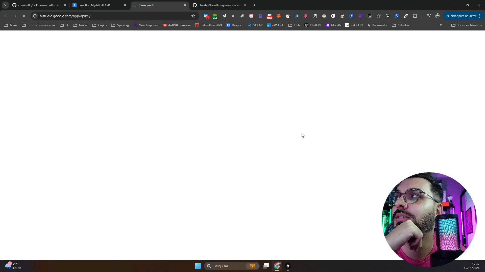
🔍 Recursos do Google AI Studio
- Interface intuitiva: Facilita a navegação e a utilização de recursos avançados.
- Testes em tempo real: Permite que você veja o desempenho do seu modelo instantaneamente.
- Documentação abrangente: Fornece guias e exemplos para ajudar no aprendizado.
🔑 Como gerar chave de API
Para utilizar o Bolt.new e o Google AI Studio de forma eficiente, é necessário gerar uma chave de API. Este processo é simples e pode ser feito diretamente na plataforma do Google. Ao acessar a opção de gerar chave, você será redirecionado para sua conta Google, onde poderá criar uma nova chave em poucos passos.
Após a geração, lembre-se de guardar a chave em um local seguro, pois ela será necessária para autenticar suas solicitações ao usar os serviços de inteligência artificial disponíveis.
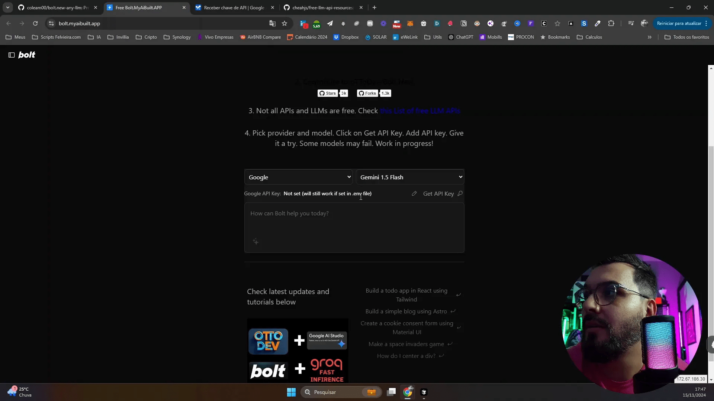
🛠️ Teste prático da ferramenta
Uma vez que você tenha sua chave de API, é hora de testar a ferramenta. O Bolt.new oferece um ambiente de testes onde você pode experimentar diferentes modelos de linguagem. Através de uma interface amigável, você pode fazer suas solicitações e ver os resultados em tempo real.
O processo de teste é crucial para entender como a inteligência artificial pode ser aplicada em seus projetos de design AI. Sinta-se à vontade para explorar as opções disponíveis e ajustar os parâmetros conforme necessário.
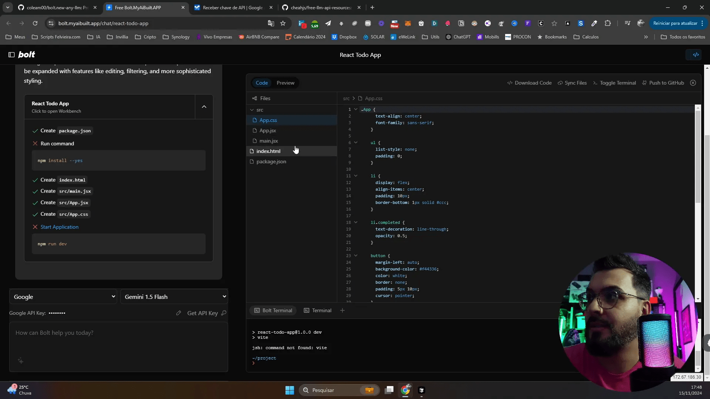
📚 Explicação sobre LM Studio
O LM Studio é uma solução que complementa o uso do Bolt.new, permitindo que você trabalhe com uma variedade de modelos de linguagem em um único lugar. Ele oferece uma interface gráfica que facilita a seleção e o uso de diferentes LLMs (Modelos de Linguagem de Grande Escala).
Esta ferramenta é especialmente útil para desenvolvedores que buscam explorar as capacidades de diferentes modelos sem a necessidade de configuração complexa. Ao usar o LM Studio, você pode rapidamente alternar entre LLMs e testar suas funcionalidades de forma prática.

🧩 Vantagens do LM Studio
- Interface gráfica: Torna o uso de LLMs mais acessível para todos os desenvolvedores.
- Carregamento rápido: Permite que você inicie testes rapidamente, economizando tempo.
- Suporte a múltiplos modelos: Facilita a comparação e a escolha do modelo mais adequado para suas necessidades.
⚙️ Configurações finais
Após testar as ferramentas e explorar suas funcionalidades, é importante realizar as configurações finais. Isso inclui ajustar os parâmetros de suas APIs e garantir que tudo esteja otimizado para o uso. O Bolt.new e o LM Studio oferecem opções de configuração que podem ser personalizadas para atender às suas necessidades específicas.
Certifique-se de revisar as opções disponíveis e ajustar conforme necessário para maximizar o desempenho de suas aplicações. O uso eficaz da inteligência artificial no desenvolvimento frontend depende de como você configura e utiliza essas ferramentas.
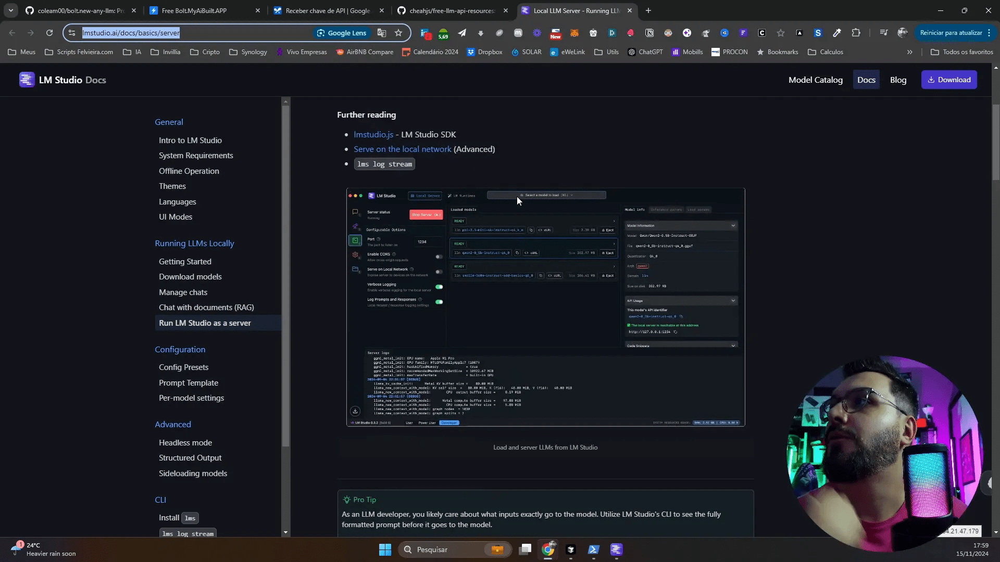
📌 A importância da inteligência artificial no desenvolvimento frontend
A inteligência artificial está se tornando uma parte essencial do desenvolvimento frontend. Sua capacidade de analisar dados em grande escala e gerar soluções personalizadas transforma a forma como os desenvolvedores criam interfaces e experiências do usuário.
Com a inteligência artificial, é possível automatizar tarefas repetitivas, melhorar a usabilidade e até mesmo prever comportamentos dos usuários. Isso resulta em produtos mais eficientes e que atendem melhor às necessidades dos clientes.
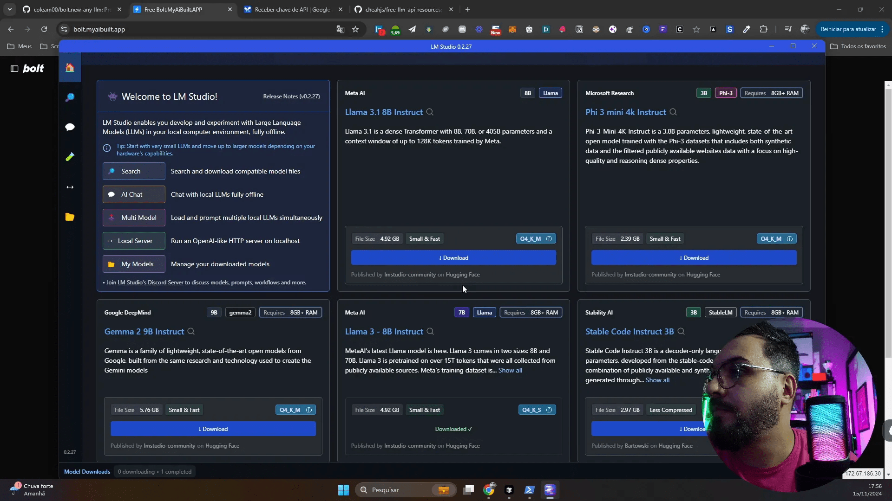
💡 Benefícios da IA no desenvolvimento
- Eficiência: A automação de tarefas permite que os desenvolvedores se concentrem em aspectos mais criativos.
- Personalização: A IA pode analisar dados do usuário para criar experiências personalizadas.
- Teste e otimização: Ferramentas de IA ajudam a testar e otimizar interfaces de forma mais rápida.
🛠️ Como o Bolt.new simplifica o processo de desenvolvimento
O Bolt.new é uma ferramenta que integra a inteligência artificial ao desenvolvimento frontend, facilitando a criação e implementação de modelos de linguagem. Sua interface intuitiva elimina a complexidade, permitindo que desenvolvedores de todos os níveis aproveitem suas funcionalidades.
Além disso, o Bolt.new oferece acesso a uma variedade de LLMs (Modelos de Linguagem de Grande Escala) que podem ser testados diretamente no navegador. Isso significa que você pode experimentar diferentes modelos sem a necessidade de configurações complicadas.

✨ Recursos do Bolt.new
- Interface amigável: Facilita a navegação e o uso de recursos avançados.
- Testes em tempo real: Observe como seu modelo se comporta instantaneamente.
- Documentação acessível: Guias e exemplos que ajudam no aprendizado e na implementação.
🌐 Vantagens de usar a versão online do Bolt.new
Optar pela versão online do Bolt.new oferece várias vantagens. Primeiro, elimina a necessidade de instalação, permitindo que você comece a trabalhar imediatamente. Além disso, você pode acessar a ferramenta de qualquer lugar, tornando-a ideal para desenvolvedores que trabalham remotamente ou em ambientes colaborativos.
A versão online também é constantemente atualizada, garantindo que você tenha acesso às últimas melhorias e funcionalidades sem precisar se preocupar com downloads ou instalações.
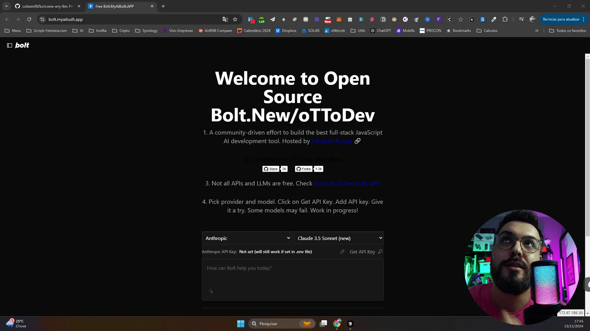
🚀 Benefícios da versão online
- Acesso imediato: Comece a usar sem instalações complicadas.
- Atualizações automáticas: Sempre tenha a versão mais recente da ferramenta.
- Colaboração fácil: Compartilhe seu trabalho com colegas em tempo real.
⚙️ Configurando o ambiente para uso do Bolt.new
Configurar o ambiente para usar o Bolt.new é um processo simples. Primeiro, você precisa acessar a ferramenta através do navegador. Em seguida, gerar uma chave de API no Google é essencial para autenticar suas solicitações.
Uma vez que você tenha sua chave, basta inseri-la na interface do Bolt.new e começar a explorar as funcionalidades disponíveis. A configuração é rápida e permite que você comece a trabalhar com inteligência artificial em instantes.

🛠️ Passos para configuração
- Acesse o site do Bolt.new.
- Gere uma chave de API no Google.
- Insira a chave na interface do Bolt.new.
- Explore as ferramentas e comece a testar modelos de linguagem.
🔍 Comparação entre LLMs disponíveis
Existem várias opções de LLMs disponíveis, cada uma com suas características e limitações. Comparar essas opções é crucial para escolher a mais adequada para o seu projeto de frontend.
Modelos como OpenAI e Anthropic oferecem desempenhos variados, enquanto alternativas como Grok podem ter limitações significativas em termos de qualidade de saída. A escolha do modelo pode impactar diretamente a eficiência e a qualidade do seu design AI.
📊 Principais LLMs para considerar
- OpenAI: Popular, com boas capacidades de linguagem, mas com limites de uso.
- Anthropic: Focado em segurança e ética, com respostas mais confiáveis.
- Grok: Menos recomendado devido à qualidade inferior de saída.
🔧 Alternativas ao Bolt.new e suas funcionalidades
Embora o Bolt.new seja uma ferramenta poderosa, existem alternativas que também podem ser exploradas para o desenvolvimento frontend com inteligência artificial. Vamos analisar algumas dessas opções e suas funcionalidades.
- Hugging Face: Uma plataforma robusta que oferece diversos modelos de linguagem pré-treinados. A interface é amigável e permite fácil integração com projetos de frontend. Você pode escolher entre modelos de diferentes tamanhos e complexidades.
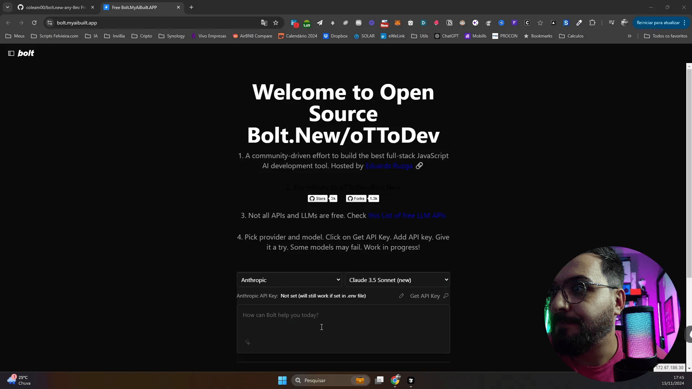
- OpenAI API: Conhecida pela sua qualidade, a API do OpenAI permite acesso a modelos avançados de linguagem. Com limites de uso, ela é ideal para quem busca resultados consistentes em projetos de design AI.
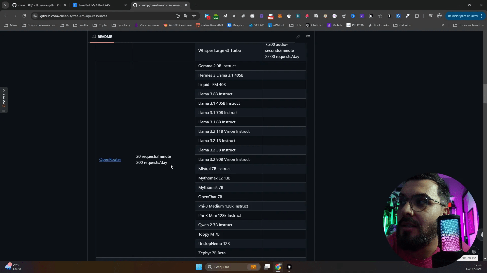
- Anthropic: Focado na segurança e ética, oferece uma experiência de uso diferenciada. Seus modelos são projetados para fornecer respostas mais confiáveis e seguras.
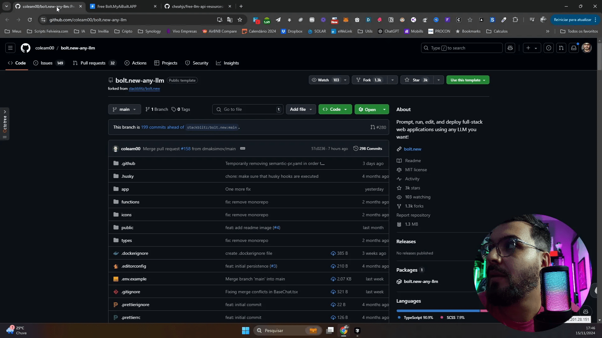
Essas alternativas podem ser utilizadas dependendo das necessidades específicas de seu projeto. A escolha da ferramenta certa pode impactar significativamente o resultado final do seu trabalho em inteligência artificial no desenvolvimento frontend.
🧠 Dicas avançadas para uso do Bolt.new
Para maximizar sua experiência com o Bolt.new, aqui estão algumas dicas avançadas que podem ajudar a otimizar seu fluxo de trabalho e resultados.
- Explore modelos de linguagem: Não se limite ao modelo padrão. Teste diferentes LLMs disponíveis para ver qual se adapta melhor ao seu projeto.
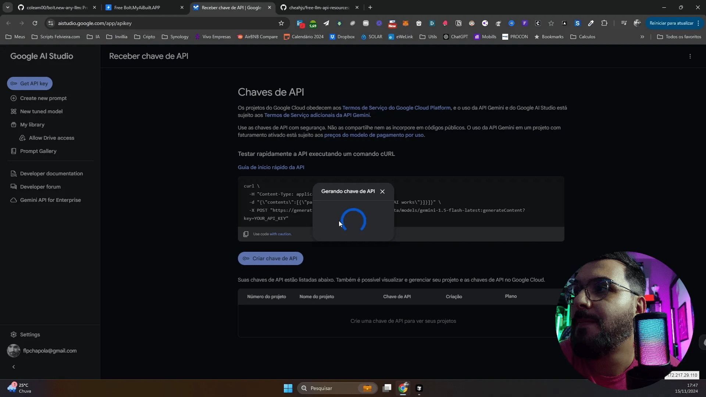
- Customização de parâmetros: Ajuste os parâmetros de entrada para otimizar as respostas geradas. Isso pode incluir a mudança de temperatura e max tokens para resultados mais relevantes.
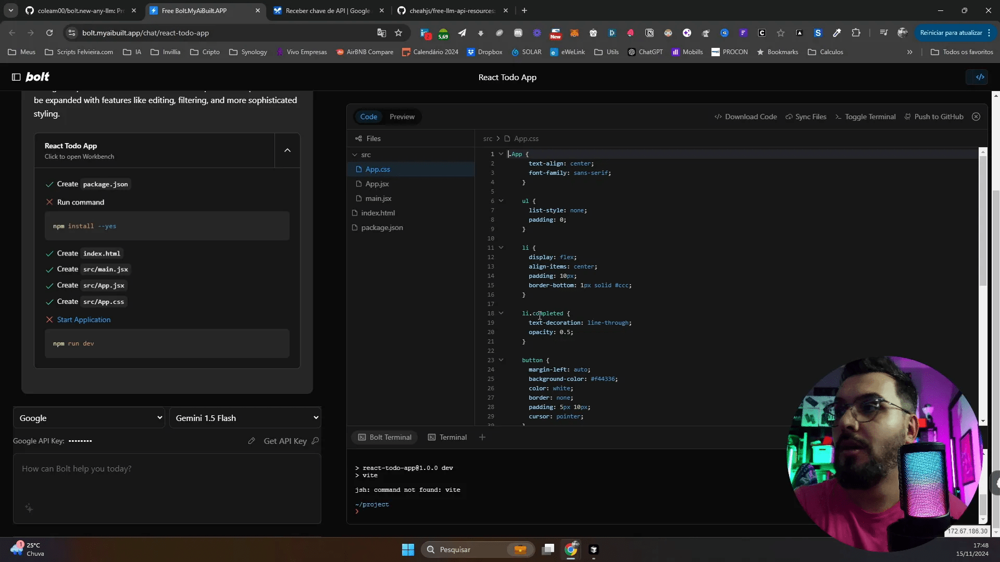
- Integração com outras ferramentas: Considere integrar o Bolt.new com outras APIs e ferramentas de frontend para criar soluções mais robustas e versáteis.
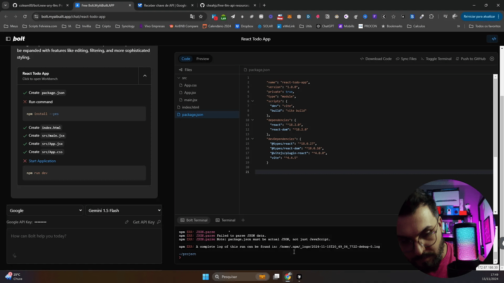
Essas dicas podem ajudar a elevar seu uso do Bolt.new e a tornar seus projetos de design AI ainda mais impactantes.
⚠️ Como resolver problemas comuns ao usar o Bolt.new
Ao utilizar o Bolt.new, você pode encontrar alguns problemas comuns. Aqui estão algumas soluções para os mais frequentes.
- Erro de autenticação: Verifique se sua chave de API está correta e ativa. Caso contrário, gere uma nova chave seguindo o processo adequado.
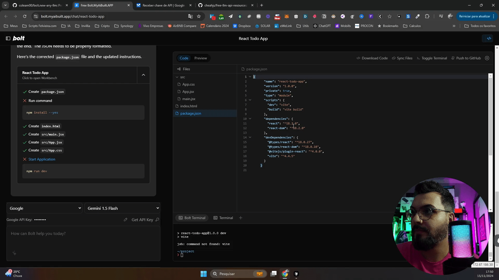
- Desempenho lento: Se a ferramenta está lenta, pode ser devido à conexão com a internet. Tente reiniciar seu modem ou usar uma conexão mais rápida.
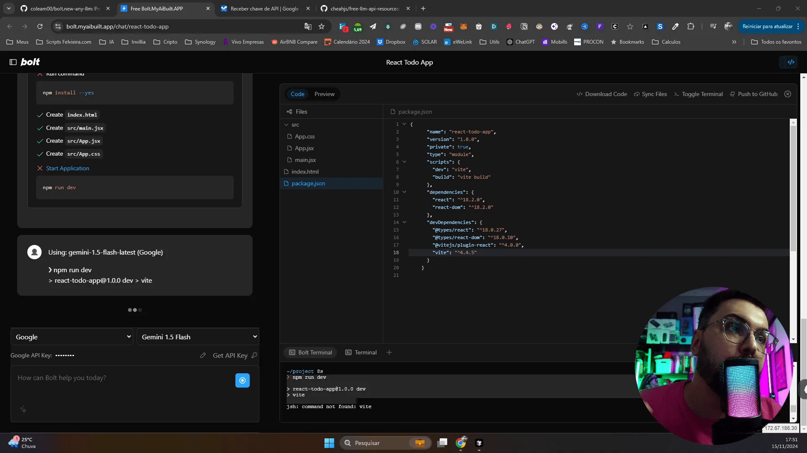
- Modelos não carregam: Se os modelos não estão carregando, verifique se você está utilizando a versão mais recente do Bolt.new e que não há interrupções no serviço.
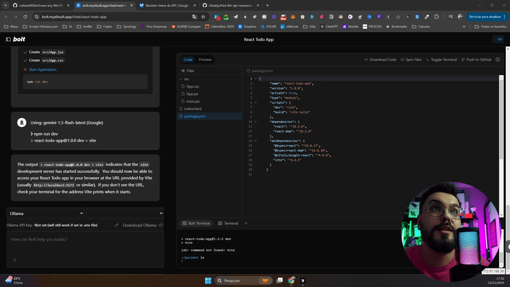
Essas soluções podem ajudar a resolver problemas que podem surgir, garantindo uma experiência mais tranquila ao utilizar a ferramenta.
❓ FAQs sobre inteligência artificial no desenvolvimento frontend
Confira algumas perguntas frequentes sobre o uso de inteligência artificial no desenvolvimento frontend.
Quais são as principais vantagens da inteligência artificial no frontend?
A inteligência artificial oferece personalização, automação de tarefas e a capacidade de prever comportamentos dos usuários, resultando em experiências mais ricas e eficientes.
Como posso integrar inteligência artificial em meu projeto de frontend?
Você pode integrar a IA utilizando APIs como o Bolt.new, OpenAI, ou outras ferramentas que oferecem modelos de linguagem e machine learning.
É possível usar IA sem conhecimento técnico avançado?
Sim, ferramentas como Bolt.new foram projetadas para serem acessíveis, permitindo que desenvolvedores de todos os níveis utilizem inteligência artificial em seus projetos.
Quais ferramentas são recomendadas para iniciantes?
Além do Bolt.new, recomenda-se começar com plataformas como Hugging Face e Google AI Studio, que oferecem interfaces amigáveis e documentação abrangente.